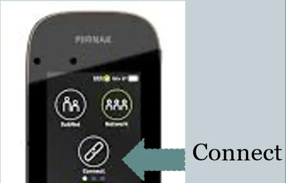

Classroom Mic Troubleshooting
Your student can't hear the mic? Pick the device you're wearing, run the 60-second check, then find the symptom. Each fix comes from the manufacturer's user guide.
60-second check (any device)
- Is the mic on and charged?Look for the light or screen. A dead battery is the most common cause.
- Is the mic muted?Mute is one tap away on all three devices and easy to hit by accident.
- Is the student's device on the right program?The hearing aid, cochlear implant or BAHA has to be on its mic/streaming program. The district setup is program 1 unless the student's plan says otherwise.
- Is the mic close to your mouth?Wear it 6–10 inches below your mouth, pointing up. Too far away sounds faint; too close sounds muffled.
- Can the student hear you tap the mic?Tap it gently and watch for a thumbs-up. That confirms the connection.
Roger Touchscreen Mic
Start of class
- Press and hold the On/Off button on the side until the screen turns on.
- Student switches their hearing aid, CI or BAHA to program 1 (their Roger program).
- Tap Connect on the screen to check the link, and tap the mic to confirm the student can hear you.
- Put on the lanyard and cinch it so the mic hangs 6–10 inches from your mouth.
- At lunch and end of day, the student switches back to their everyday program. Charge the mic overnight.


Reading the screen
| You see | It means |
|---|---|
| Blank screen | Off, or the battery is empty. Hold On/Off; if nothing happens, plug in the charger. |
| Mute button lit / mic shown muted | The mic is muted. Press the mute button below the screen once. |
| Lanyard icon in the status bar | Normal teaching mode. It picks up the wearer's voice. |
| Battery icon low | Charge soon. Plan to charge every night. |
Find the problem
Student hears nothing
- Check the screen is on and the battery isn't empty.
- Make sure the mic isn't muted.
- Ask the student to confirm their device is on program 1 (the Roger/FM/DAI program).
- Check the Roger receiver is attached to the hearing aid or processor and switched on.
- Move closer. If you're far away or around a corner, the signal can drop.
- Hold the student's device within 4 inches (10 cm) of the mic and tap Connect.
- Still nothing: restart the mic by holding On/Off + Mute together for 10 seconds. Restarting does not erase connections.
Sound is faint or muffled
- Shorten the lanyard so the mic is 6–10 inches from your mouth.
- Make sure it's hanging upright and facing you, not flipped or under a jacket or scarf.
- Don't lay it flat on a desk while teaching. Flat on a table it listens to the whole group, not just you.
Sound cuts in and out
- Stay in the same room as the student. Walls, doors and distance weaken the signal.
- Check the mic and the student's receiver are both charged.
- Tap Connect with the student's device close to the mic to refresh the link.
Screen frozen or not responding
- Hold On/Off + Mute together for 10 seconds until it restarts. Connections are kept.
- If it still won't respond, charge it for at least 30 minutes and try again.
A new student, or a new receiver, needs to be added
- Turn on the student's device with the Roger receiver attached.
- Hold it within 4 inches of the mic and tap Connect. Keep other Roger devices away while you do this.
- Connect one device at a time. Once connected, it stays connected.
Do not use “NewNet.” It erases the mic's network, and every student's receiver and any extra mics then have to be reconnected. Ask your DHH teacher first.
Videos and manuals
EduMic

Start of class
- Press and hold the button for 2 seconds, until both lights turn white. Let go.
- Wait about 10 seconds until the Status light turns green. EduMic is on.
- Student's hearing aids switch to the EduMic stream (program 1). Tap the mic to confirm they hear you.
- Clip it to the lanyard or your collar, 6–10 inches from your mouth.
- To mute, press the button briefly. Press briefly again to unmute.
Reading the Status light
| Status light | It means | |
|---|---|---|
| White | Starting up. Wait for green. | |
| Green | Mic is on and sending your voice. | Normal |
| Flashing green | Muted. Press the button briefly to unmute. | |
| Flashing blue | Pairing in progress. | |
| Yellow / flashing | Jack/FM mode (muted if flashing). The built-in mic isn't the source. | Call DHH |
| Magenta / flashing | Telecoil mode (muted if flashing). Not the normal classroom setting. | Call DHH |
| Red | All hearing aid pairings were cleared. Students must be re-paired. | Call DHH |
Power light flashing red = low battery. Charge with the micro USB cable.
Find the problem
Student hears nothing
- Status light green? If no lights, hold the button 2 seconds; if still nothing, charge it.
- Flashing green means muted. Press the button briefly once.
- Yellow or magenta means it's in the wrong mode. Contact your DHH teacher.
- Ask the student to check their hearing aids are on the EduMic program (program 1).
- Have the student turn their hearing aids off and back on (or open and close the battery doors). They reconnect when they restart.
- Still nothing: the hearing aids may need pairing again (see below).
Sound is faint or muffled
- Move EduMic up to 6–10 inches from your mouth.
- Make sure the microphone slot on top isn't covered by clothing, a badge or hair.
Light turned red
The button was held for about 12 seconds, which clears every pairing. Students won't get sound until their hearing aids are paired again.
To turn EduMic off, hold the button only until the lights go out, then let go. Holding longer clears pairings.
A student's hearing aids need pairing
- Turn EduMic on (green Status light). Put the student's hearing aids close to it.
- Restart the hearing aids. Rechargeable: hold the lower part of the hearing aid button 3 seconds (off), then 2 seconds (on). Battery: open and close the battery doors.
- Pairing must happen within 3 minutes. The Status light flashes blue, then turns green when done.
- Pair one student at a time. EduMic remembers up to 10 sets of hearing aids, so this is usually a one-time step.
Mini Microphone 2+
Start of class
- Press and hold the ON/OFF button (top) about 1.5 seconds until the LED turns green. Let go; it then blinks green.
- Student starts streaming on their CI or BAHA processor: program 1, or press and hold the processor button about 3 seconds (or use their Cochlear app or remote).
- Tap the mic to confirm the student hears you.
- Clip it or use the lanyard, 6–10 inches from your mouth.
- At lunch and end of day, student stops streaming with a short press of the processor button. Charge the mic overnight.

Reading the lights
| Light | It means | |
|---|---|---|
| Blinking green | On and ready. | Normal |
| Red while holding | Turning off. | |
| Flashing yellow | Less than 30 minutes of battery left. Charge it. (Also shows during the 20-second pairing window.) | |
| Red on charger | Charging. | |
| Green + red blink | Fully charged (red flash every 2 seconds while still plugged in). | |
| Mute LED on | Muted. Press MUTE once to unmute. |
A full charge lasts about 10 hours. A new mic needs at least 3 hours of charging before first use.
Find the problem
Student hears nothing
- Status LED blinking green? If not, hold ON/OFF; if nothing happens, charge it.
- Mute LED lit? Press MUTE once.
- Ask the student to start streaming again on their processor (program 1, or hold the processor button about 3 seconds).
- Turn the volume up with the volume UP button on the mic.
- Have the student turn the processor off and on, then start streaming again.
- Still nothing: the processor may need pairing again (see below).
Too soft or too loud
- Use the volume UP / DOWN buttons on the side of the mic.
- Check the mic is 6–10 inches from your mouth and not covered by clothing.
Sound cuts in and out
- Stay in the same room with a clear path to the student.
- Check the battery. Flashing yellow means less than 30 minutes left.
Processor needs pairing
- Turn the Mini Mic on. Keep the processor close by.
- Press the small pairing button once with a pen tip (channel 1). The LED flashes yellow for 20 seconds.
- Within those 20 seconds, restart the processor (turn it on, or close the battery door). A melody or flashing light on the processor confirms pairing.
- If the 20 seconds run out, repeat. Pairing is normally done once by your DHH teacher or audiologist.
Videos and manuals
When to stop and call
Contact your campus Teacher of the Deaf/Hard of Hearing or the district educational audiologist if:
- The student still can't hear after the 60-second check and the device fixes above.
- A device needs pairing, or an EduMic light shows yellow, magenta or red.
- The student's own hearing aid or processor isn't working, even without the mic. Don't change settings on the student's device beyond switching programs.